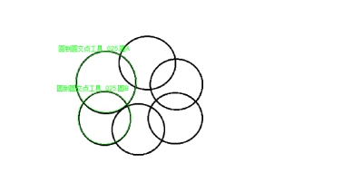
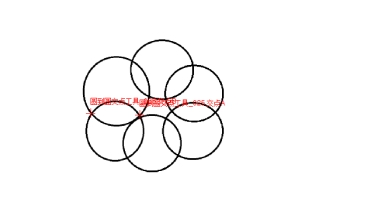
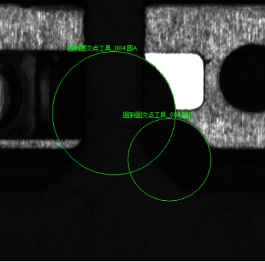

Công cụ giao điểm từ hình tròn đến hình tròn chủ yếu dùng để tính giao điểm giữa hai hình tròn trong hình ảnh đầu vào và xuất tọa độ giao điểm.


| Phân loại | Tên tham số | Giải thích tham số |
|---|---|---|
| Cửa sổ thuộc tính | Không có | Không có |
| Cửa sổ hình ảnh | Hình ảnh đầu vào | Hiển thị hình ảnh cần phát hiện. |
| Dây dữ liệu | Hình ảnh đầu vào | Chiều rộng, chiều cao và kích thước pixel của hình ảnh đầu vào, giống tham số trong cửa sổ hình ảnh. |
| Hình tròn A | Hình tròn thứ nhất cần tính giao điểm. | |
| Hình tròn B | Hình tròn thứ hai cần tính giao điểm. | |
| Giao diện nâng cao | Không có | Không có |
| Phân loại | Tên tham số | Giải thích tham số |
|---|---|---|
| Cửa sổ giám sát | Hình ảnh đầu vào | Chiều rộng, chiều cao và kích thước pixel của hình ảnh đầu ra. |
| Giao điểm A | Tọa độ hình ảnh của giao điểm thứ nhất giữa hình tròn A và B. | |
| Giao điểm B | Tọa độ hình ảnh của giao điểm thứ hai giữa hình tròn A và B. | |
| Kết quả thực thi | Kết quả thực thi của công cụ. | |
| Thời gian thực thi | Thời gian công cụ thực thi. | |
| Cửa sổ hình ảnh | Hình ảnh đầu vào | Hiển thị hình ảnh kết quả thực thi công cụ, giống tham số hình ảnh đầu vào trong cửa sổ giám sát. |
| Giao điểm A | Tọa độ hình ảnh của giao điểm thứ nhất giữa hình tròn A và B. | |
| Giao điểm B | Tọa độ hình ảnh của giao điểm thứ hai giữa hình tròn A và B. | |
| Kết quả thực thi | Hiển thị kết quả công cụ: thành công hiển thị “OK”, thất bại hiển thị “NG”, giống tham số kết quả trong cửa sổ giám sát. | |
| Dây dữ liệu | Giao điểm A | Tọa độ hình ảnh của giao điểm thứ nhất giữa hình tròn A và B, dùng cho các công cụ tiếp theo, giống tham số Giao điểm A trong cửa sổ giám sát. |
| Giao điểm B | Tọa độ hình ảnh của giao điểm thứ hai giữa hình tròn A và B, dùng cho các công cụ tiếp theo, giống tham số Giao điểm B trong cửa sổ giám sát. |
Không có
Nếu hai hình tròn không có giao điểm, công cụ thực thi sẽ thất bại.
Khi không chỉ định nguồn tham số hình tròn trong cửa sổ dây dữ liệu, hình tròn sẽ được xác định từ GUI hình tròn trong cửa sổ hình ảnh; nếu nguồn tham số hình tròn đã được chỉ định trong cửa sổ dây dữ liệu, tham số này sẽ ưu tiên, và hình tròn xác định từ GUI trong cửa sổ hình ảnh sẽ không hợp lệ.
Nếu hình tròn được xác định từ GUI hình tròn trong cửa sổ hình ảnh, mỗi lần mở dự án cần xác định lại hình tròn.
Tham số hình tròn A và B trong dây dữ liệu có thể là hình tròn đầy đủ hoặc là hình tròn chứa cung tròn (như minh họa Hình 2).

参见“\Samples\形状间距及相关点.gvp”。